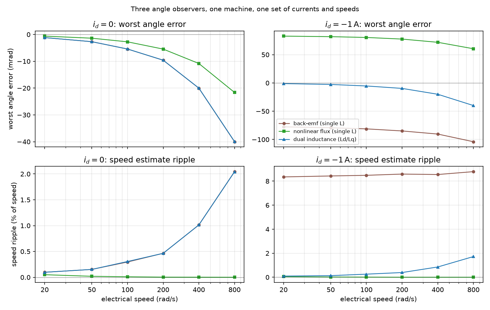

1.1.2. Choosing an angle observer
The task: commutate without an encoder, and know before the machine turns which of the library's observers to trust, and where it stops being good enough.
1.1.2.1. What you need
foc/core/observer/back_emf_observer.hpp-- the smallest one: integratev - Rs*i, subtractL*i, take the angle of what is left. Two parameters, one inductance, and no correction term of any kind.foc/core/observer/nonlinear_flux_observer.hpp-- the same idea with a pull towards the rotor flux added, which is what replaces a missing integration constant: it needs no seed and it corrects itself, at the cost of a floor below which the correction dominates the signal.foc/core/observer/dual_inductance_observer.hpp-- the same integrator with the angle recovered from both inductances, closed form. It costs one more parameter and buys the model that a salient machine actually has.foc/core/observer/blended_observer.hpp-- if the answer depends on speed, this is the hand-over between two of the above, so that the choice is a function of the operating point instead of a decision made once (see Zero and low speed).
1.1.2.2. A minimal program
docs/doxygen/dox/demos/observers.cxx drives all three through the same exact
steady state, so the only difference between the three answers is the model each
one carries. It sweeps speed and the d-axis current, and writes one row per
(current, speed, observer); the same file produces this page's figure.
1// Observers -- which one to trust, and where its ceiling is: three observers
2// driven by the same exact steady state, so the only difference between the
3// three numbers is the model each one carries.
4//
5// Build it the way the `demo` gate does -- the example calls into the library, so
6// the sources are part of the command, and `-Iinclude` alone fails at the link:
7// g++ -std=c++17 -fno-exceptions -fno-rtti -Wall -Wextra -Werror -Iinclude
8// docs/doxygen/dox/demos/observers.cxx src/core/*.cpp
9// src/core/observer/*.cpp src/motor/*.cpp src/driver/*.cpp src/api/foc_api.c
10// src/api/bridge.cpp src/version.c -o /tmp/observers
11//
12// With `--csv <path>` it writes one row per (d-axis current, speed, observer);
13// `docs/demos/make_figures.py` draws this example's figure from that file.
14//
15// There is no plant in this program. The voltage is not simulated, it is computed
16// from the machine's own steady-state equations for the speed and the d-axis
17// current on the row, and the current fed to the observer is the current those
18// equations were solved for. That is what makes the comparison a comparison: a
19// simulated plant would add its own error to all three columns equally, which is
20// the one thing a reader trying to choose between observers does not need.
21//
22// Two of the three must be seeded, because a pure integrator cannot know its own
23// integration constant -- the library says so on the type and hands you
24// `seed_flux()` for it. They are **not** seeded with the same vector, and that is
25// the first thing this program is for. The single-`L` observer's estimate is
26// `psi - L*i`, not `psi`: its recursion subtracts the increment of `L*i` every step,
27// so whatever was seeded stays in the estimate as a fixed vector. Hand it the stator
28// flux and `-L*i_0` stays behind -- `8e-4 * 0.5 = 4e-4` Wb here, against a 4.76e-3 Wb
29// rotor flux, whose angle is 0.084 rad. Measured on the same row at 20 rad/s: 0.085
30// rad with the stator seed, 0.0012 with the rotor seed. The dual-inductance observer
31// is the other way round -- its state *is* the stator flux
32// (`psi_f*e^(j*theta) + L0*i + L1*conj(i)*e^(j*2*theta)`), so that is what it takes,
33// and the rotor seed was measurably wrong for it in the opposite direction. The two
34// seeds below therefore differ, and the difference is in the observers, not in a
35// preference of this file.
36//
37// 观测器 —— 该信哪一个、它在哪里到头：三个观测器被同一个精确稳态驱动，于是三个数
38// 字之间的差别只剩它们各自带的模型。
39//
40// 这个程序里没有被控对象。电压不是仿真出来的，而是由电机自己的稳态方程按本行的转速与
41// d 轴电流算出来的，喂给观测器的电流也是同一组方程解出来的。这才让比较成为比较：一个
42// 仿真被控对象会给三列加上它自己的误差，而正在选型的人最不需要的正是那个。
43//
44// 三个之中有两个必须被播种，因为纯积分器无从知道自己的积分常数 —— 库在类型上写着这件事，
45// 并把 `seed_flux()` 交给你。它们 **不是** 用同一个矢量播的，而这正是本程序要说的第一件事。
46// 单电感观测器的估计量是 `psi - L*i` 而不是 `psi`：它的递推每一步都减去 `L*i` 的增量，所以播
47// 进去的东西会以固定矢量的形式留在估计里。把定子磁链交给它，`-L*i_0` 就留在里面——这里是
48// `8e-4 * 0.5 = 4e-4` Wb，对着 4.76e-3 Wb 的转子磁链，对应角度 0.084 rad。同一行实测，
49// 20 rad/s：定子种子 0.085 rad，转子种子 0.0012。双电感观测器正好相反 —— 它的状态 *就是*
50// 定子磁链（`psi_f*e^(j*theta) + L0*i + L1*conj(i)*e^(j*2*theta)`），所以它吃的是那个；
51// 用转子磁链去播它，在反方向上是可测地错的。下面两个种子因此不同，差别在观测器身上，
52// 不在这份文件的偏好里。
53// 带 `--csv <path>` 时按 (d 轴电流, 转速, 观测器) 逐行写出；`docs/demos/make_figures.py`
54// 用它画本片的图。
55
56#include <cmath>
57#include <cstdio>
58#include <cstring>
59
60#include <foc/core/observer/back_emf_observer.hpp>
61#include <foc/core/observer/dual_inductance_observer.hpp>
62#include <foc/core/observer/nonlinear_flux_observer.hpp>
63#include <foc/core/transforms.hpp>
64#include <foc/core/types.hpp>
65
66namespace {
67
68constexpr float kTwoPi = 6.28318530718F;
69constexpr float kPi = 3.14159265359F;
70constexpr float kDtS = 5.0e-5F; // 20 kHz control loop
71constexpr int kSettleSteps = 20000; // one second of ticks before the row is read
72
73/// The machine, named once. Lq is twice Ld on purpose: with Ld == Lq the two
74/// single-inductance observers have no model error to show, and a page about
75/// choosing between them would be comparing three copies of the same answer.
76/// 电机只写一次。Lq 是 Ld 的两倍是有意的：Ld == Lq 时两个单电感观测器没有模型误差
77/// 可露，那一页就变成同一个答案比三遍了。
78struct Machine final {
79 float rs_ohm;
80 float ld_h;
81 float lq_h;
82 float psi_f_wb;
83};
84
85constexpr Machine kMachine{0.5F, 4.0e-4F, 8.0e-4F, 4.7619e-3F};
86
87/// The one inductance the two single-`L` observers are given. It is the **q-axis**
88/// one, because that is what a single-`L` model means: the design point is
89/// `i_d = 0`, where the whole current lies on q and `Lq` is the inductance that
90/// turns it into flux. Handing them `Ld` instead would manufacture a model error
91/// the library does not have, and the page would then be measuring this file's
92/// mistake rather than the observers. On a machine with `Ld == Lq` the choice
93/// disappears, which is why the machine below deliberately does not have it.
94/// 两个单电感观测器拿的是 **q 轴** 电感，因为这就是单电感模型的含义：设计点是 `i_d = 0`，
95/// 电流全在 q 轴上，把电流变成磁链的就是 `Lq`。给它们 `Ld` 会造出一个库本身没有的模型
96/// 误差，那一页量的就成了本文件的错误而不是观测器。`Ld == Lq` 的机器上这个选择不存在，
97/// 所以下面这台机器故意不是那样。
98constexpr float kSingleL_h = kMachine.lq_h;
99
100/// One step of the steady state at `theta_e`: the d-q voltage that holds (i_d,
101/// i_q) against the back-EMF, rotated back into the stationary frame. `inv_park`
102/// is the library's own, so the demo cannot disagree with it about a sign.
103/// 稳态在 `theta_e` 处的一步：顶住反电势、维持 (i_d, i_q) 所需的 dq 电压，再转回静止系。
104/// 用的是库自己的 `inv_park`，于是本演示不可能在符号上和它不一致。
105struct Sample final {
106 foc::core::Ab<float> v_ab;
107 foc::core::Ab<float> i_ab;
108};
109
110auto sample_at(float speed_rad_s, float i_d_a, float i_q_a, float theta_e_rad) -> Sample {
111 const float v_d = kMachine.rs_ohm * i_d_a - speed_rad_s * kMachine.lq_h * i_q_a;
112 const float v_q = kMachine.rs_ohm * i_q_a + speed_rad_s * (kMachine.ld_h * i_d_a + kMachine.psi_f_wb);
113 return Sample{foc::core::inv_park(foc::core::Dq<float>{v_d, v_q}, theta_e_rad),
114 foc::core::inv_park(foc::core::Dq<float>{i_d_a, i_q_a}, theta_e_rad)};
115}
116
117auto wrap_pi(float angle_rad) -> float {
118 while (angle_rad > kPi) {
119 angle_rad -= kTwoPi;
120 }
121 while (angle_rad < -kPi) {
122 angle_rad += kTwoPi;
123 }
124 return angle_rad;
125}
126
127/// What one observer answers after the same settling time, against the same truth.
128/// 同一个稳定时间之后，一个观测器给出的答案，面对同一个真值。
129struct Reading final {
130 float error_rad; ///< the worst excursion over one revolution, signed: the sign says which side it fell on
131 float omega_rad_s; ///< mean over the measurement revolution, not one sample
132 float ripple_rad_s; ///< worst departure from that mean over the same revolution
133};
134
135/// The rotor flux at electrical angle zero. This observer's estimate is `psi - L*i`,
136/// not `psi`: its recursion subtracts the *increment* of `L*i`, so whatever is seeded
137/// stays in the estimate as a fixed vector. Seeding it with the stator flux therefore
138/// leaves `L*i_0` behind -- a 0.084 rad offset vector on this machine, added to one
139/// that rotates -- and the angle error then swings with the electrical frequency
140/// instead of holding still. The two seeds differ because the two states differ; there
141/// is no single "the flux" to hand both of them.
142/// 电角度为零处的转子磁链。本观测器的估计量是 `psi - L*i` 而不是 `psi`：它的递推减掉的是
143/// `L*i` 的 *增量*，所以播进去的东西会以固定矢量的形式留在估计里。因此用定子磁链去播它，就
144/// 等于留下 `L*i_0`——在这台机器上是 0.084 rad 的偏置矢量，加在一个正在旋转的矢量上——角度
145/// 误差于是随电频率摆动，而不是稳定不动。两个种子不同，是因为两个状态不同：不存在一个可以
146/// 同时交给它们两个的“那个磁链”。
147constexpr auto rotor_flux_at_zero() noexcept -> foc::core::Ab<float> {
148 return foc::core::Ab<float>{kMachine.psi_f_wb, 0.0F};
149}
150
151/// The stator flux at electrical angle zero, from the library's own expression
152/// `psi = psi_f*e^(j*theta) + L0*i + L1*conj(i)*e^(j*2*theta)`, which at theta = 0
153/// collapses to `(psi_f + Ld*i_d, Lq*i_q)`. The dual-inductance observer is the one
154/// whose state is this vector, so this is the seed it takes.
155/// 电角度为零处的定子磁链，取自库自己的表达式，在 theta = 0 处塌缩成
156/// `(psi_f + Ld*i_d, Lq*i_q)`。双电感观测器是状态就是它的那一个，所以这才是它该吃的种子。
157auto stator_flux_at_zero(float i_d_a, float i_q_a) noexcept -> foc::core::Ab<float> {
158 return foc::core::Ab<float>{kMachine.psi_f_wb + kMachine.ld_h * i_d_a, kMachine.lq_h * i_q_a};
159}
160
161/// Drive one already-constructed observer across the same steady state, and report
162/// the **worst** angle error over one electrical revolution after settling.
163///
164/// Two choices in here are about not measuring the harness. The settling run covers a
165/// whole number of revolutions, so the reading does not depend on where the rotor
166/// happens to stop. And the number reported is the worst error over a full revolution
167/// rather than one sample, because a model error is a fixed vector in *some* frame:
168/// a d-axis flux error is invisible to a single reading taken at rotor phase zero (it
169/// changes the magnitude of the estimate and not its angle) and reads at full size a
170/// quarter turn later. One sample per speed therefore measures the reading phase -- this
171/// program gave 0.000 and 0.083 rad for the same observer at the same current before
172/// the revolution was swept. The sign is kept: it says which side of the truth the
173/// worst excursion fell on.
174/// 把已经构造好的观测器推过同一段稳态，并报告稳定之后 **一个电周期内最差** 的角度误差。
175///
176/// 这里有两个选择都是为了避免量到台架自己。稳定段跑整数个电周期，读数就不取决于转子恰好停在
177/// 哪里。报的是整转内的最差值而不是单次采样，因为模型误差是 *某个* 坐标系里的固定矢量：d 轴
178/// 磁链误差在转子相位为零处的单次读数上完全看不见（它改变估计的幅值而不改变角度），四分之一
179/// 转之后才读出全部大小。每个转速取一次样，量的就是读数相位——在扫这一整转之前，本程序对同一个
180/// 观测器、同一个电流给出过 0.000 和 0.083 rad。符号保留：它说明最差的那次落在真值的哪一侧。
181template <typename Observer>
182auto settled(Observer& observer, float speed_rad_s, float i_d_a, float i_q_a,
183 const foc::core::Ab<float>* seed = nullptr) -> Reading {
184 const float step_rad = speed_rad_s * kDtS;
185 const int turns = static_cast<int>(std::ceil(static_cast<float>(kSettleSteps) * step_rad / kTwoPi));
186 const int steps = static_cast<int>(std::lround(static_cast<float>(turns) * kTwoPi / step_rad));
187 const int per_turn = static_cast<int>(std::lround(kTwoPi / step_rad));
188 float theta_e = 0.0F;
189 foc::core::ObsState state{};
190 if (seed != nullptr) {
191 observer.seed_flux(*seed);
192 }
193 float worst = 0.0F;
194 double omega_sum = 0.0;
195 float omega_low = 0.0F;
196 float omega_high = 0.0F;
197 int measured = 0;
198 for (int step = 0; step < steps + per_turn; ++step) {
199 const Sample sample = sample_at(speed_rad_s, i_d_a, i_q_a, theta_e);
200 state = observer.update(sample.v_ab, sample.i_ab, kDtS);
201 theta_e += step_rad;
202 if (theta_e >= kTwoPi) {
203 theta_e -= kTwoPi;
204 }
205 if (step >= steps) {
206 const float error = wrap_pi(state.theta_e - theta_e);
207 if (std::fabs(error) > std::fabs(worst)) {
208 worst = error;
209 }
210 // The speed is reported as a mean over the same revolution, and its ripple
211 // separately: a control loop closes on the mean but is disturbed by the
212 // ripple, and one instantaneous sample would report whichever of the two
213 // the reading phase happened to land on.
214 // 转速报同一转内的均值，纹波单独报：闭环吃的是均值，被扰动的是纹波，而单次采样只会
215 // 报出读数相位恰好落上的那一个。
216 const float omega = state.omega_e;
217 omega_sum += static_cast<double>(omega);
218 omega_low = measured == 0 ? omega : std::fmin(omega_low, omega);
219 omega_high = measured == 0 ? omega : std::fmax(omega_high, omega);
220 ++measured;
221 }
222 }
223 const auto omega_mean = static_cast<float>(omega_sum / static_cast<double>(measured));
224 const float ripple = std::fmax(omega_high - omega_mean, omega_mean - omega_low);
225 return Reading{worst, omega_mean, ripple};
226}
227
228/// These names are printed and also written into a comma-separated field, so none of
229/// them may contain a comma. A comma in a name does not fail loudly -- the reader
230/// just gets a short row and the series disappears from the figure.
231/// 这些名字既上屏又进 CSV 字段，所以都不能带逗号。带了不会报错 —— 读者只是拿到一行
232/// 短数据，曲线就从图里消失了。
233auto observer_name(int index) -> const char* {
234 switch (index) {
235 case 0:
236 return "back-emf (single L)";
237 case 1:
238 return "nonlinear flux (single L)";
239 case 2:
240 return "dual inductance (Ld/Lq)";
241 default:
242 return "?";
243 }
244}
245
246} // namespace
247
248auto main(int argc, char** argv) -> int {
249 const char* csv_path = nullptr;
250 if (argc == 3 && std::strcmp(argv[1], "--csv") == 0) {
251 csv_path = argv[2];
252 } else if (argc != 1) {
253 std::fprintf(stderr, "usage: %s [--csv <path>]\n", argv[0]);
254 return 2;
255 }
256
257 constexpr float kSpeeds[] = {20.0F, 50.0F, 100.0F, 200.0F, 400.0F, 800.0F};
258 constexpr float kDaxis[] = {0.0F, -1.0F};
259 constexpr float kIqA = 0.5F;
260 constexpr int kObservers = 3;
261
262 std::FILE* csv = csv_path == nullptr ? nullptr : std::fopen(csv_path, "w");
263 if (csv_path != nullptr && csv == nullptr) {
264 std::fprintf(stderr, "cannot write %s\n", csv_path);
265 return 1;
266 }
267 if (csv != nullptr) {
268 std::fprintf(csv, "panel,i_d_a,speed_rad_s,observer,worst_error_rad,omega_rad_s,omega_ripple_rad_s\n");
269 }
270
271 std::printf("machine: Rs %.3f ohm, Ld %.1e H, Lq %.1e H, psi_f %.4e Wb, iq %.2f A\n",
272 static_cast<double>(kMachine.rs_ohm), static_cast<double>(kMachine.ld_h),
273 static_cast<double>(kMachine.lq_h), static_cast<double>(kMachine.psi_f_wb),
274 static_cast<double>(kIqA));
275 std::printf("%-13s %-26s %12s %10s %10s\n", "speed (rad/s)", "observer", "worst (rad)", "omega",
276 "ripple");
277
278 for (const float i_d : kDaxis) {
279 const char* panel = i_d == 0.0F ? "id0" : "idneg";
280 std::printf("\n-- i_d = %.1f A --\n", static_cast<double>(i_d));
281 for (const float speed : kSpeeds) {
282 for (int index = 0; index < kObservers; ++index) {
283 Reading reading{};
284 if (index == 0) {
285 foc::core::BackEmfObserver observer{{kMachine.rs_ohm, kSingleL_h}};
286 const auto seed = rotor_flux_at_zero();
287 reading = settled(observer, speed, i_d, kIqA, &seed);
288 } else if (index == 1) {
289 // The non-linear flux observer carries a correction, so it needs no
290 // seed: the pull towards `psi_f` is what replaces the missing
291 // integration constant. That same correction is why it has a floor
292 // instead of a seed.
293 // 非线性磁链观测器带修正，所以不需要种子：拉向 `psi_f` 的那一项就是缺失
294 // 的积分常数的替代。也正是这项修正给了它地板而不是种子。
295 foc::core::NonlinearFluxObserver observer{
296 {kMachine.rs_ohm, kSingleL_h, kMachine.psi_f_wb, 1.0F, 1.0F, 1.0e-4F}};
297 reading = settled(observer, speed, i_d, kIqA);
298 } else {
299 foc::core::DualInductanceObserver observer{
300 {kMachine.rs_ohm, kMachine.ld_h, kMachine.lq_h, kMachine.psi_f_wb}};
301 const auto seed = stator_flux_at_zero(i_d, kIqA);
302 reading = settled(observer, speed, i_d, kIqA, &seed);
303 }
304 std::printf("%-13.0f %-26s %12.6f %10.3f %10.3f\n", static_cast<double>(speed),
305 observer_name(index), static_cast<double>(reading.error_rad),
306 static_cast<double>(reading.omega_rad_s),
307 static_cast<double>(reading.ripple_rad_s));
308 if (csv != nullptr) {
309 std::fprintf(csv, "%s,%.1f,%.0f,%s,%.9f,%.6f,%.6f\n", panel, static_cast<double>(i_d),
310 static_cast<double>(speed), observer_name(index),
311 static_cast<double>(reading.error_rad),
312 static_cast<double>(reading.omega_rad_s),
313 static_cast<double>(reading.ripple_rad_s));
314 }
315 }
316 }
317 }
318
319 if (csv != nullptr) {
320 std::fclose(csv);
321 std::printf("\nwrote %s\n", csv_path);
322 }
323 return 0;
324}
1.1.2.3. Where the numbers come from
The one inductance the single-``L`` observers are given is ``Lq``. Their models are written for the operating point they are meant for --
i_d ~ 0, where the current sits on the q axis -- and the header says so onapply_params(). Handing themLdis not a stricter test, it is a different machine, and it manufactures a bias the library does not have.The seeds are per observer, not per page.
seed_flux()fixes the last integration constant so that the observer's own estimate equals the vector you hand it. For the single-Lobserver that estimate ispsi - L*i; for the dual-inductance one it is the stator flux itself. The same vector is correct for one and wrong for the other.``psi_f`` comes from the nameplate, not from a measurement in this file. It is
Ktdivided by1.5*pole_pairs; the value here is chosen so that the machine is a plausible small servo, and every conclusion on this page is a ratio that does not depend on it.``dt`` is the control period, and it is part of the answer, not a detail. The integrators are backward-Euler, so a fraction of a step of rotation is built into every reading; the faster the machine, the larger that fraction gets.
1.1.2.4. How it goes wrong
Both observers seeded with the same vector. The one that does not hold that quantity keeps the difference as a fixed vector, forever -- a pure integrator never forgets an integration constant. The failure does not look like a bug: the estimate still turns at the right speed, it is simply offset by a constant, and only the observer whose estimate is the seeded quantity is unaffected.
One sample per operating point. A model error is a fixed vector in the stationary frame, so its angle cost depends on where the rotor happens to be at the moment of reading: at rotor phase zero a d-axis flux error changes the magnitude of the estimate and not its angle at all. Reading once per speed measures the reading phase, and it will happily report a clean result for an observer that is a tenth of a radian out a quarter of a turn later. Sweep a whole revolution and report the worst.
A single-``L`` observer used where ``i_d`` is not zero. The residual is
(Lq - Ld)*i_dagainst a much larger rotor flux, and it scales with the amount of field weakening asked for. This is why the field-weakening path needs a different observer rather than a different parameter, and why an MTPA reference -- which is defined by itsi_d-- is not a place to put a single-Lestimator behind.A closed loop given the mean and not the ripple. All three report the true mean speed when the model is right; they differ in how much the instantaneous value moves between samples, and a current loop working from the instantaneous value sees that difference even though the mean is identical.
The sampled-data floor mistaken for a model error. Above a few hundred rad/s every observer here is limited by the same thing, and it is arithmetic, not physics: the step of rotation happens between the samples. No parameter, no seed and no better model removes it -- a shorter period does.
1.1.2.5. Evidence
Three claim rows cover this page -- foc/core/observer/back_emf_observer.hpp,
foc/core/observer/nonlinear_flux_observer.hpp and
foc/core/observer/dual_inductance_observer.hpp -- and the level this page may
state is the minimum of those three. Every measured number this page would
otherwise want to quote -- the size of the single-L bias against i_d, the
speed at which each observer's floor takes over, what a resistance or a current
offset costs -- lives in those rows and in the headers' own measured notes.
What this page does not claim: anything about a switching inverter. The program above has no dead time, no current ripple, no sensor noise and no saturation, and it is exact about its own parameters. Those are the four things that decide whether an observer works on a real drive, and they are not visible in this figure by construction -- the figure is there to isolate the model, which is the only thing it can isolate honestly.
1.1.2.6. Figure


Figure 1.2 the columns differ only in the d-axis current; the upper row is the worst angle error over one electrical revolution, the lower row the speed estimate's ripple -- the mean is exact for all three and would plot as a flat line
Both panels come from this page's example. The left column is the operating point
the single-L models are written for, and there the three curves lie on top of one
another: the only visible difference is the coefficient of the step of rotation,
which the corrected observer halves. The right column is the same three observers at
one ampere of negative d-axis current, and the picture separates them -- two lines
leave, one stays where it was. What the figure does not show is anything about cost:
the dual-inductance observer is not slower or heavier than the others in a way this
plot could express, and it wins the right column by carrying one more parameter that
somebody has to have measured.